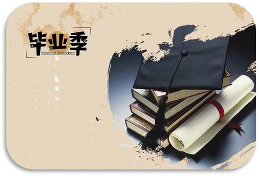
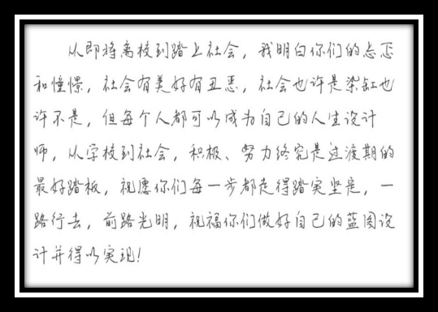

毕业季，我们不说再见
今天是毕业生离校的最后一天。在这两天里，其他人已经陆续搬走了。如今的宿舍空荡凌乱，大家带不走或不愿带走的东西，都横七竖八地躺在地上。我打开灯，开始最后的整理。
大一潦草的笔记，大二组织活动剩下的稿件，大三没吃完的药，大四考研复习的资料。纸片上的电话已经不记得是谁的了，一堆英语书好像都没有看过……看着看着，我竟不知不觉落下泪来，只有我才能理解每一笔每一划里包含的意义。还是留下了很多东西没有拿走，可更多更重要的东西不也永远地留在了这里了吗?不论是我带走的还是留下的，都是我大学四年最真实的写照。
最后环视一下空荡的宿舍。那只小猪靠垫实在塞不进箱子了，只能留在那里。那口锅也没有带走，而未来想必也不会再煮出当时的好味道了。手里的东西都已经满了，这些就都当作留念，留在这里吧。
依依不舍地关了灯。那一刹那，心里迅速划过一阵尖利的痛。想起四个字，青春散场。四年以前，我拎着简单的行李来到这里，而今天，我重新拎起新的行李，将要开始下一站的生活。像这四年里的每一天一样，我沿着再熟悉不过的路线走出公寓的大门，不过当我的脚步跨出门槛的一刹那，我将不再是这里的一员。
这一次，我不是去买盒饭，去附近的网吧上网，去校外的小店闲逛，或者是睡眼惺忪地跑去上课。这一次，我会很郑重地对这个留下我四年青春的地方说一声--再见!
再见了，我的宿舍，再见了，我的兄弟，
再见了，我的青春，再见了，我的爱情，
再见，我的大学。
青春散场，我们等待下一场开幕。等待我们在前面的旅途里，迎着阳光，勇敢地飞向心里的梦想;等待我们在前面的故事里，就着星光，回忆这生命中最美好的四年，盛开过的花……
时光静走，清葱岁月，弹指间，昨夕稚气懵懂的样子也被时光淘洗的恍若两世。有人说，大学是梦想者的天堂，是无梦者的温床。也许，众生都有自己的生活轨迹与法则。成功与否，也都收拾行李，也收拾着心情;带走梦想，带走青涩，擦抹自己的足迹与回忆，在明天，继续谱写自己的剧本。
别宴将至，离歌渐起，在这情感模糊的年代，大学的交情，特别是胜似兄弟的舍友情，可以让我们不带利益，不求目的，不拘形式，肆意享受青春最后的张扬。曾经，彼此间构筑了一道坎，踏进门后就放下了虚伪与戒备，放下了一切利益熏心，可以一起拨动思绪，诉语千载春秋，“胡侃”宇内宇外……

有人说友谊如酒，越久愈香醇;有人说，时间会冲淡一切，那些渐行渐远的终是陌客天涯。忘不了，曾经的寒暄嬉闹，翘课贪眠，一起背包客山戏水的日子;曾经的矛盾与默契，都是今日抛飞思绪的快乐与幸福。我想，不管未来淅沥如雨，亦或明媚如春，思君如常……巫山为笔，沧海为墨，难以涂抹你的模样，这是曾经的花香甜蜜、山盟海誓。秋风乍起，带着曾挣扎的花瓣随流水一起远去;消逝的，还有那芒树下的思念。白素的纸，苍白的字，当星宿沉默山岳，把约定一起埋于秋风，让一切归零。
那年那个清晨，我们走进校园，擦肩而过，回眸一笑；那年那个清晨，我们临近别离，挥挥衣袖，匆匆告别。青葱美好的大学四年就这样缓缓落下了帷幕
不觉有些爱已经开始倒计时了，容不得我们的任性和不珍惜了。毕业的季节，也一样，在时光中轮回，一个不经意，又是一个告别的秋冬。落叶飘，雁南度，剪径秋凉各自归，徒留残红满地忧伤。曾几何时，欲化身石桥，化作满天繁星中的一颗，祈愿和守望着那晕着余晖的笑容。绚烂的夏花，原认为是上帝的眷顾，却是让你导演一段刻骨铭心，当清辉寒彻大地，又望夕幕，落寞成殇。
踏在青春的节点上，从彷徨、青涩、无知到稳重淡然优雅。为了事业亦或生活，我们不再自顾怜惜逝去的青春。众生路，亦无谓被带往何处，成长，让我们幼稚童真的年代晦涩的隐没。
清风拂晓月，落花掩古城。昔日的铮铮志言，如独行的孤雁，匆匆而忘记曾要前行的轨迹。面对生活，既以选择，只顾风雨兼程。有人说，选择事业，就得放弃自由、割舍情缘、走脱繁喧、心与青灯伴，旁若无鹜才能走向胜利的云翳虹彩。我想翱翔只近希望，驻足便是低谷，有所坚守，生活愈彩。红尘纷扰喧哗，多少宏心高士疲于生活，丢了情怀，失了梦想。既以掌舵，有守信奉和追逐，为那黎明前刹那芳华逐梦而活。光阴可惜莫轻抛，人生不止，奋斗不息……
一阙旧词染新韵，浮生盼，醉把千年度。
毕业季，似乎又见那些身影，那些场景，还有那些故事。